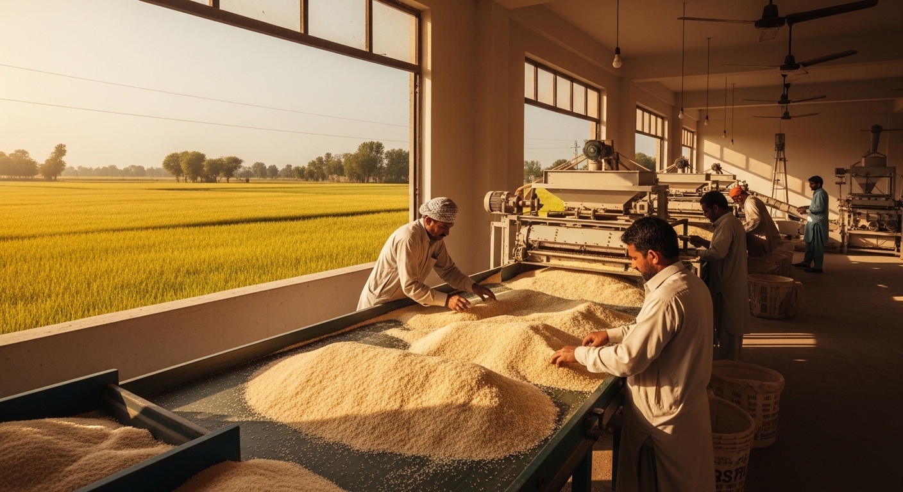

Basmati Super
Pure Aroma. Perfect Every Time.
Authentic basmati with naturally aged grains, exquisite aroma, and exceptional elongation for signature rice dishes.
View Details →Serving Pakistan's finest families & businesses since 2014 - straight from the heart of Sialkot.

About Eman Rice Mills
Founded in 2014 by Ansar Mehmood Sandhu and Muhammad Azam Sandhu, Eman Rice Mills has grown into one of Punjab's most trusted rice milling operations. Located in the fertile heartland of Sialkot - Village Langyawali, P.O Satrah, Tehsil Daska - we bring time-honored milling expertise to every grain we process. Under the guidance of General Manager Muhammad Farooq, our dedicated team ensures that every bag that leaves our mill meets the highest standards of purity and quality.
Our Product Range
From aromatic Basmati to everyday staples - quality in every grain.
Pure Aroma. Perfect Every Time.
Authentic basmati with naturally aged grains, exquisite aroma, and exceptional elongation for signature rice dishes.
View Details →
Extra Long Grains. Extra Special Moments.
The crown jewel of basmati, celebrated for extra-long grains, unmatched fragrance, and luxurious fluffiness.
View Details →
Everyday Basmati, Elevated.
Long, slender grains with quick cooking properties for consistent quality and delightful everyday taste.
View Details →Sourced directly from Punjab's finest paddy fields.
State-of-the-art processing equipment for purity.
Rigorous quality control before every dispatch.
Consistent, on-time delivery anywhere in Pakistan.
Our Milling Journey
A meticulous journey that ensures every grain is pure, clean, and perfect.
Selected from trusted Punjab farmers for clean, aromatic raw grain.
Dust, stones, and chaff are removed before moisture is balanced.
Outer husk is gently removed while protecting grain structure.
Rice is refined in stages for a bright, smooth finish.
Broken and discolored grains are separated for uniform quality.
Approved rice is sealed in hygienic bags for freshness.
Orders are dispatched reliably to customers across Pakistan.
Eman Rice Mills gives us steady quality and clean packing, which matters when you are serving retail customers every day.Rana Traders
Lahore
Their basmati cooks beautifully and the team is straightforward with pricing and delivery timelines.Al Madina Foods
Gujranwala
We trust Eman for dependable supply. The rice quality stays consistent from order to order.Punjab Wholesale Mart
Sialkot